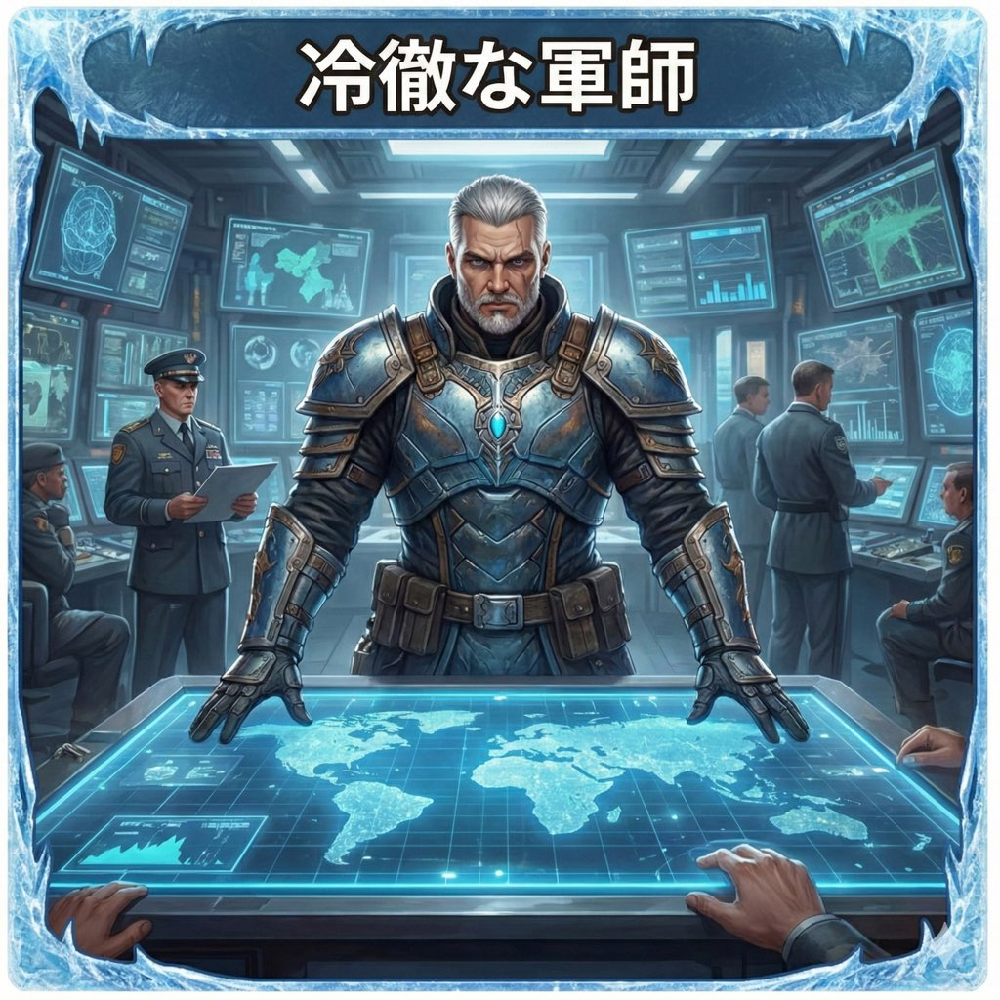
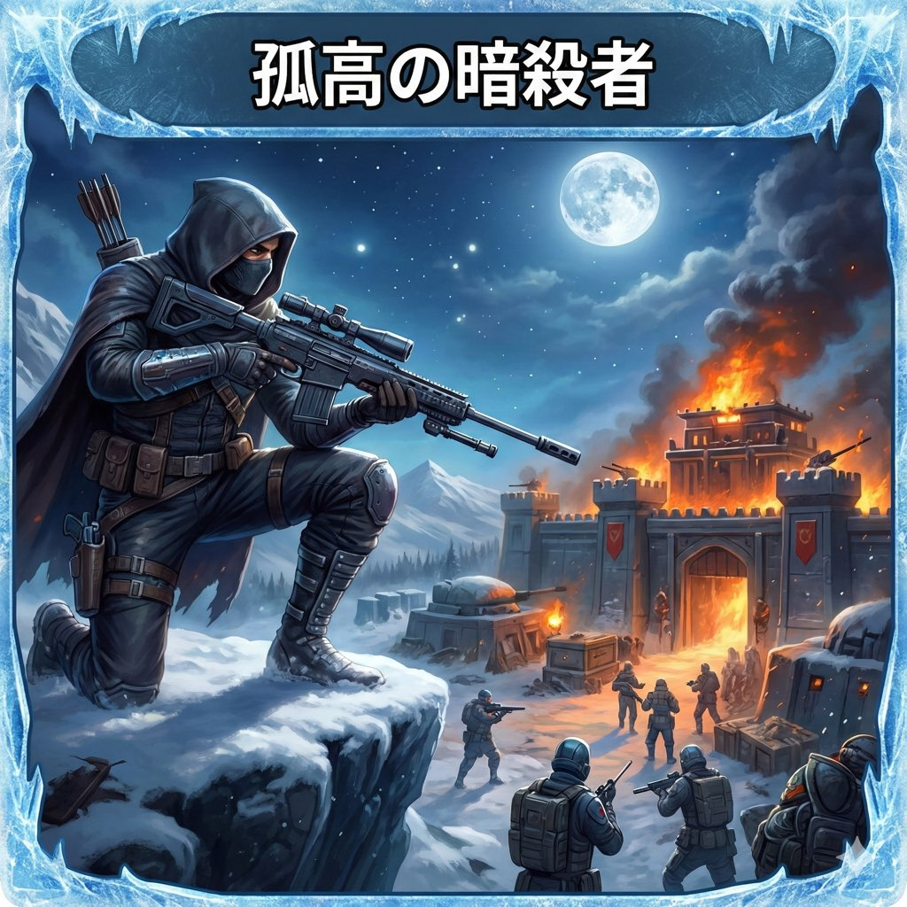
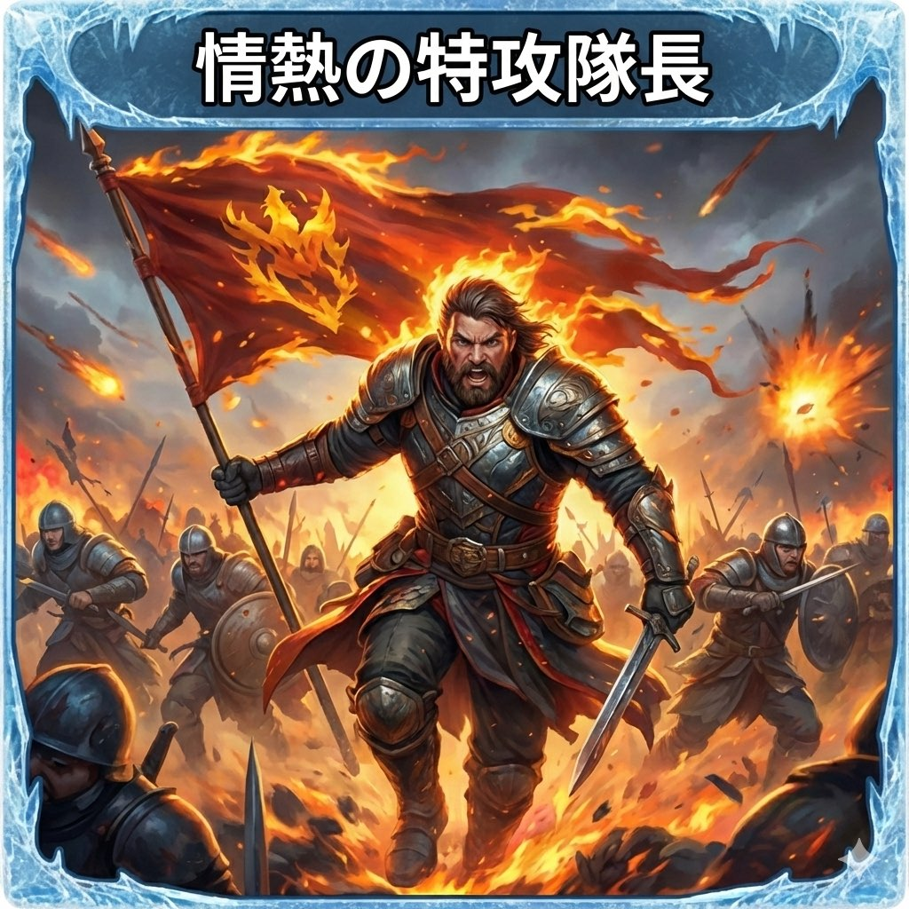
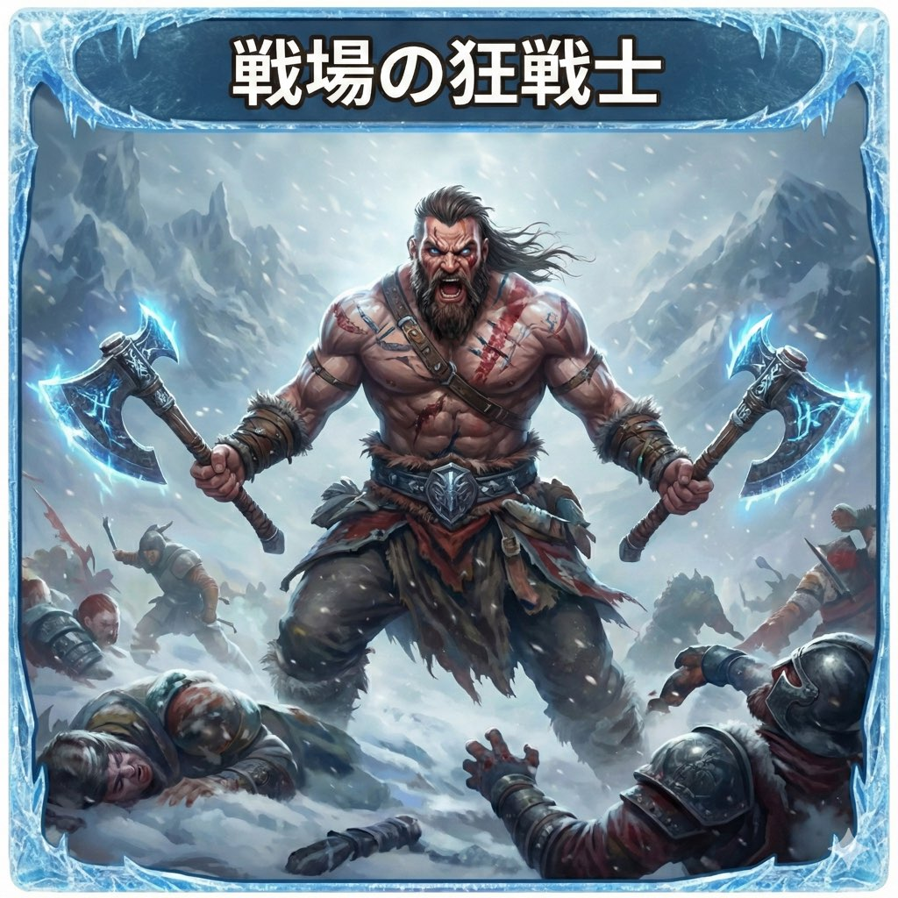
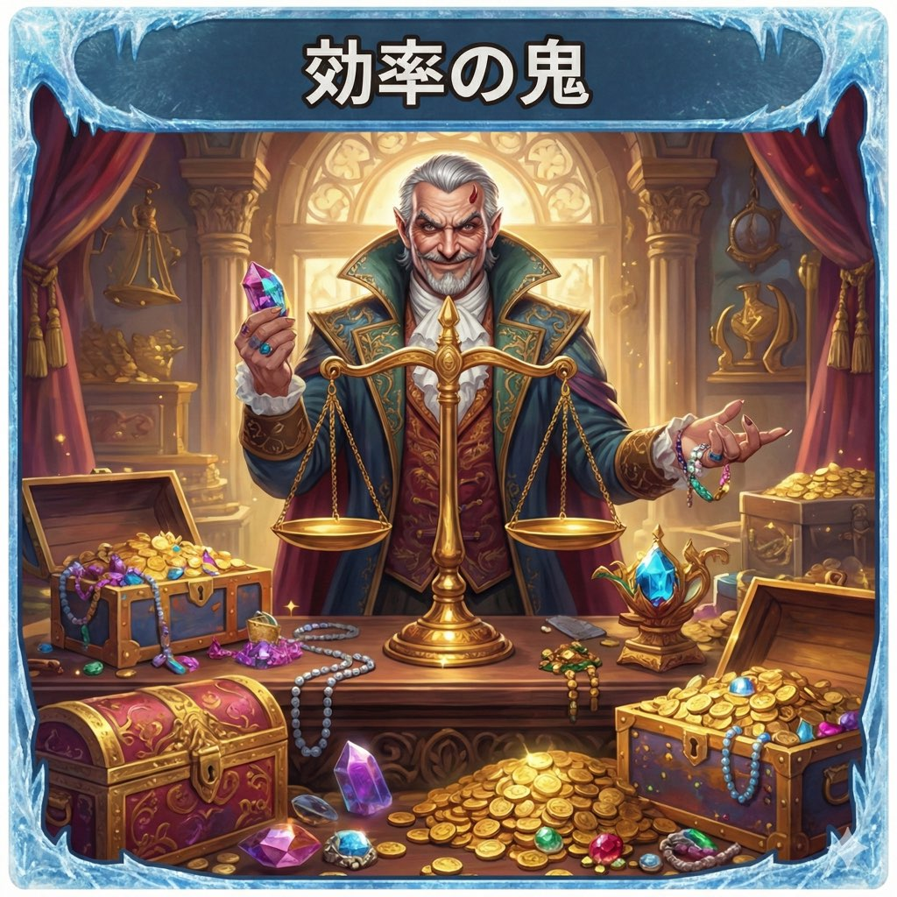
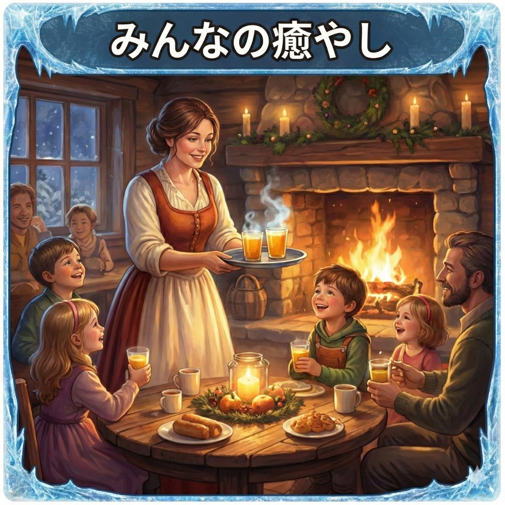
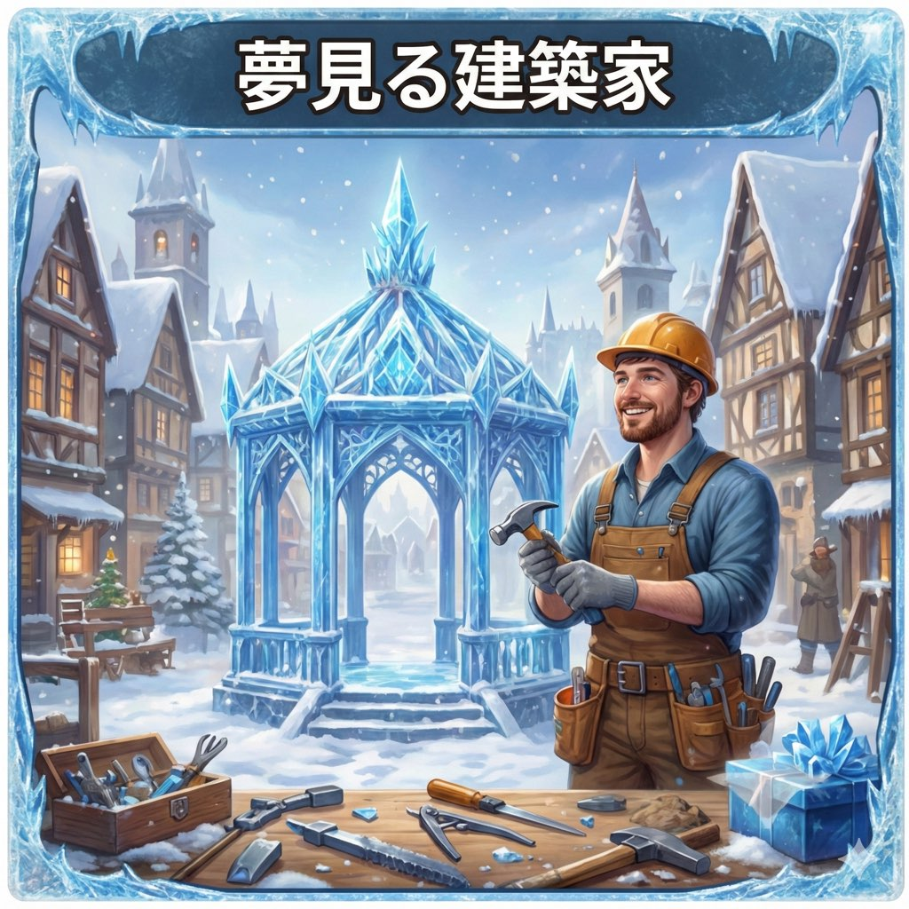

トップページに戻る
TYPE CHECKER
育成タイプ診断
1分であなたの「本性」が暴かれる！？
プレイスタイルの傾向を分析し、あなたに最適なアドバイスをお伝えします。
診断をスタート
※Googleフォームが開きます
診断の仕組み（3つの軸）
【軸A】目的
あなたがゲームに求めているのは「戦争での勝利」か、それとも「都市の繁栄」か？
覇道 (B)
VS
繁栄 (G)
【軸B】判断
意思決定の際、効率やデータを重視するか、楽しさやノリを重視するか？
論理 (L)
VS
感覚 (I)
【軸C】行動
集団を率いて戦うのが得意か、単独で自由に動くのが好きか？
統率 (T)
VS
孤高 (S)
診断結果は全8タイプ

B-L-T
冷徹な軍師
「勝利の方程式は、すでに完成している」
感情に流されず「勝てる戦い」だけを選んで指揮できる真のリーダー。

B-L-S
孤高の暗殺者
「気づいた時には、もう燃やし尽くしている」
敵の隙を突くゲリラ戦が得意な仕事人。手薄な城を正確に見つけ出す。

B-I-T
情熱の特攻隊長
「細かいことはいい！全員突撃だァ！」
圧倒的な行動力で同盟の士気を爆発させるムードメーカー。

B-I-S
戦場の狂戦士
「目の前に敵がいる。だから倒す。それだけだ」
純粋にバトルを楽しむ戦闘狂。予測不能な動きで敵から恐れられる。
G-L-T
完璧な官僚
「同盟の成長こそが、私の喜びです」
利益最大化に長けた参謀。スケジュール管理や指示出しが完璧。

G-L-S
効率の鬼
「1ダイヤの無駄遣いも、私には許せない」
ポイ活や資産運用が得意。最小の投資で最大の戦力を実現する。

G-I-T
みんなの癒やし
「戦うのもいいけど、みんなでお喋りしようよ！」
殺伐とした世界のオアシス。同盟内のコミュニケーションを支える。

G-I-S
夢見る建築家
「私の城、昨日よりちょっと可愛くなったかも」
自分のペースでコツコツと箱庭を育てることに幸せを感じる。
⚠️注意事項
この診断はエンターテイメントコンテンツです。結果はあくまで目安であり、プレイスタイルを断定するものではありません。
最終的な課金や育成の判断はご自身の責任で行ってください。
診断結果は公式LINEにてお届けします。
診断をスタート
回答時間：約1分